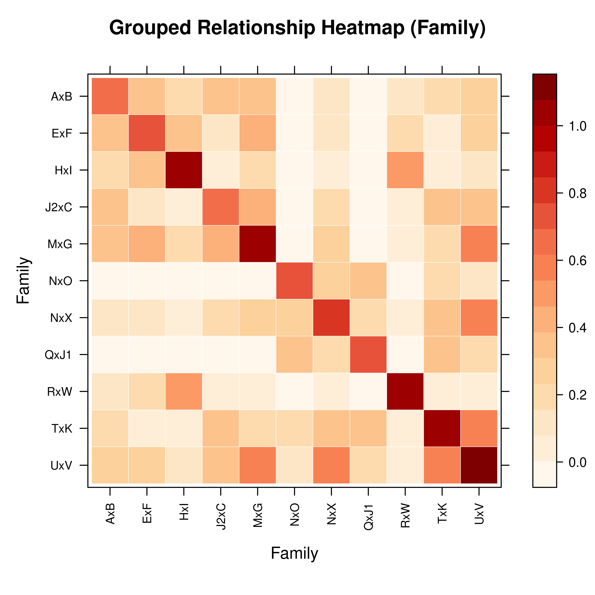
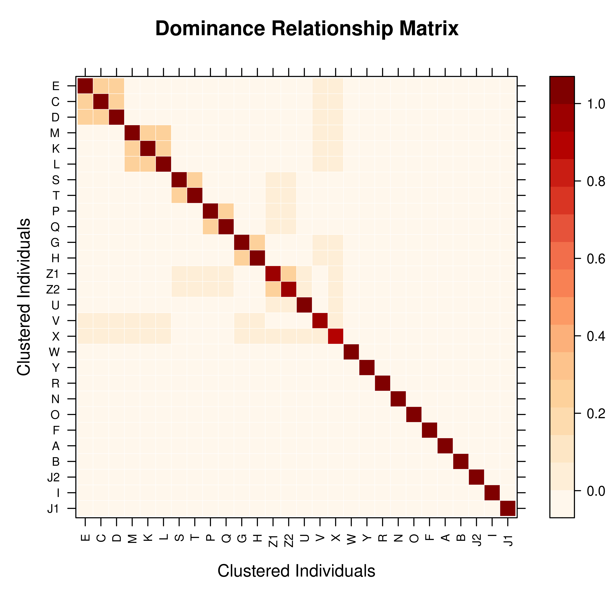

vismat provides visualization tools for relationship matrices (A, D, AA),
supporting individual-level heatmaps and relationship coefficient histograms.
This function is useful for exploring population genetic structure, identifying
inbred individuals, and analyzing kinship between families.
Usage
vismat(
mat,
ped = NULL,
type = "heatmap",
ids = NULL,
reorder = TRUE,
by = NULL,
grouping = NULL,
labelcex = NULL,
...
)Arguments
- mat
A relationship matrix. Can be one of the following types:
A
pedmatobject returned bypedmat— including compact matrices, which are automatically expanded to full dimensions before plotting (see Details).A
tidypedobject (automatically calculates additive relationship matrix A).A named list containing matrices (preferring A, D, AA).
A standard
matrixorMatrixobject.
Note: Inverse matrices (Ainv, Dinv, AAinv) are not supported for visualization because their elements do not represent meaningful relationship coefficients.
- ped
Optional. A tidied pedigree object (
tidyped), used for extracting labels or grouping information. Required when using thebyparameter with a plain matrix input. Ifmatis apedmatobject, the pedigree is extracted automatically.- type
Character, type of visualization. Supported options:
"heatmap": Relationship matrix heatmap (default). Uses a Nature Genetics style color palette (white-orange-red-dark red), with optional hierarchical clustering and group aggregation."histogram": Distribution histogram of relationship coefficients. Shows the frequency distribution of lower triangular elements (pairwise kinship).
- ids
Character vector specifying individual IDs to display. Used to filter and display a submatrix of specific individuals. If
NULL(default), all individuals are shown.- reorder
Logical. If
TRUE(default), rows and columns are reordered using hierarchical clustering (Ward.D2 method) to bring closely related individuals together. Only affects heatmap visualization. Automatically skipped for large matrices (N > 2000) to improve performance.Clustering principle: Based on relationship profile distance (Euclidean distance between rows). Full-sibs have nearly identical relationship profiles with the whole population, so they cluster tightly together and appear as contiguous blocks in the heatmap.
- by
Optional. Column name in
pedto group by (e.g.,"Family","Gen","Year"). When grouping is enabled:Individual-level matrix is aggregated to a group-level matrix (computing mean relationship coefficients between groups).
For
"Family"grouping, founders without family assignment are excluded.For other grouping columns, NA values are assigned to an
"Unknown"group.
Useful for visualizing population structure in large pedigrees.
- grouping
[Deprecated]Usebyinstead.- labelcex
Numeric. Manual control for font size of individual labels. If
NULL(default), uses a dynamic font size that adjusts automatically based on matrix dimensions (range 0.2–0.7). Labels are hidden automatically when N > 500.- ...
Additional arguments passed to the underlying plotting function:
Value
Invisibly returns the lattice plot object. The plot is
rendered on the current graphics device.
Details
Compact Matrix Handling
When mat is a compact pedmat object (created with
pedmat(..., compact = TRUE)), vismat() automatically calls
expand_pedmat to restore the full-dimension matrix before
rendering. This ensures that all original individuals — including full-sib
family members that were merged into a single representative — appear in the
heatmap. A message is printed to report the expansion dimensions, e.g.:
Expanding compact matrix (18 -> 170000 individuals) for visualization.For very large pedigrees where full expansion is memory-intensive, consider
using the by parameter to aggregate to a group-level view instead.
Heatmap
Uses a Nature Genetics style color palette (white to orange to red to dark red).
Hierarchical clustering reordering (Ward.D2) is enabled by default.
Grid lines shown when N \(\le\) 100; labels shown when N \(\le\) 500.
mat[1,1]is displayed at the top-left corner.
Histogram
Shows the distribution of lower-triangular elements (pairwise kinship).
X-axis: relationship coefficient values; Y-axis: frequency percentage.
Performance
N > 2000: hierarchical clustering is automatically skipped.
N > 500: individual labels are automatically hidden.
N > 100: grid lines are automatically hidden.
bygrouping uses vectorizedrowsum()algebra — suitable for large matrices.
See also
pedmat for computing relationship matrices,
expand_pedmat for manually restoring compact matrix dimensions,
query_relationship for querying individual pairs,
tidyped for tidying pedigree data,
visped for visualizing pedigree structure graphs,
levelplot, histogram
Examples
library(visPedigree)
data(small_ped)
ped <- tidyped(small_ped)
# ============================================================
# Basic Usage
# ============================================================
# Method 1: from tidyped object (auto-computes A)
vismat(ped)
 # Method 2: from pedmat object
A <- pedmat(ped)
vismat(A)
# Method 2: from pedmat object
A <- pedmat(ped)
vismat(A)
 # Method 3: from plain matrix
vismat(as.matrix(A))
# Method 3: from plain matrix
vismat(as.matrix(A))
 # ============================================================
# Compact Pedigree (auto-expanded before plotting)
# ============================================================
# For pedigrees with large full-sib families, compute a compact matrix
# first for efficiency, then pass directly to vismat() — it automatically
# expands back to full dimensions.
A_compact <- pedmat(ped, compact = TRUE)
vismat(A_compact) # prints: "Expanding compact matrix (N -> M individuals)"
#> Expanding compact matrix (27 -> 28 individuals) for visualization.
# ============================================================
# Compact Pedigree (auto-expanded before plotting)
# ============================================================
# For pedigrees with large full-sib families, compute a compact matrix
# first for efficiency, then pass directly to vismat() — it automatically
# expands back to full dimensions.
A_compact <- pedmat(ped, compact = TRUE)
vismat(A_compact) # prints: "Expanding compact matrix (N -> M individuals)"
#> Expanding compact matrix (27 -> 28 individuals) for visualization.
 # For very large pedigrees, aggregate to a group-level view instead
vismat(A, ped = ped, by = "Gen",
main = "Mean Relationship Between Generations")
#> Aggregating 28 individuals into 6 groups based on 'Gen'...
# For very large pedigrees, aggregate to a group-level view instead
vismat(A, ped = ped, by = "Gen",
main = "Mean Relationship Between Generations")
#> Aggregating 28 individuals into 6 groups based on 'Gen'...
 # ============================================================
# Heatmap Customization
# ============================================================
# Custom title and axis labels
vismat(A, main = "Additive Relationship Matrix",
xlab = "Individual", ylab = "Individual")
# ============================================================
# Heatmap Customization
# ============================================================
# Custom title and axis labels
vismat(A, main = "Additive Relationship Matrix",
xlab = "Individual", ylab = "Individual")
 # Preserve original pedigree order (no clustering)
vismat(A, reorder = FALSE)
# Preserve original pedigree order (no clustering)
vismat(A, reorder = FALSE)
 # Custom label font size
vismat(A, labelcex = 0.5)
# Custom label font size
vismat(A, labelcex = 0.5)
 # Custom color palette (blue-white-red)
vismat(A, col.regions = colorRampPalette(c("blue", "white", "red"))(100))
# Custom color palette (blue-white-red)
vismat(A, col.regions = colorRampPalette(c("blue", "white", "red"))(100))
 # ============================================================
# Display a Subset of Individuals
# ============================================================
target_ids <- rownames(A)[1:8]
vismat(A, ids = target_ids)
# ============================================================
# Display a Subset of Individuals
# ============================================================
target_ids <- rownames(A)[1:8]
vismat(A, ids = target_ids)
 # ============================================================
# Histogram of Relationship Coefficients
# ============================================================
vismat(A, type = "histogram")
# ============================================================
# Histogram of Relationship Coefficients
# ============================================================
vismat(A, type = "histogram")
 vismat(A, type = "histogram", nint = 30)
vismat(A, type = "histogram", nint = 30)
 # ============================================================
# Group-level Aggregation
# ============================================================
# Group by generation
vismat(A, ped = ped, by = "Gen",
main = "Mean Relationship Between Generations")
#> Aggregating 28 individuals into 6 groups based on 'Gen'...
# ============================================================
# Group-level Aggregation
# ============================================================
# Group by generation
vismat(A, ped = ped, by = "Gen",
main = "Mean Relationship Between Generations")
#> Aggregating 28 individuals into 6 groups based on 'Gen'...
 # Group by full-sib family (founders without a family are excluded)
vismat(A, ped = ped, by = "Family")
#> Note: Excluding 9 founder(s) with no family assignment: J1, O, N, F, R (and 4 more)
#> Aggregating 19 individuals into 11 groups based on 'Family'...
# Group by full-sib family (founders without a family are excluded)
vismat(A, ped = ped, by = "Family")
#> Note: Excluding 9 founder(s) with no family assignment: J1, O, N, F, R (and 4 more)
#> Aggregating 19 individuals into 11 groups based on 'Family'...

# ============================================================
# Other Relationship Matrices
# ============================================================
# Dominance relationship matrix
D <- pedmat(ped, method = "D")
vismat(D, main = "Dominance Relationship Matrix")
